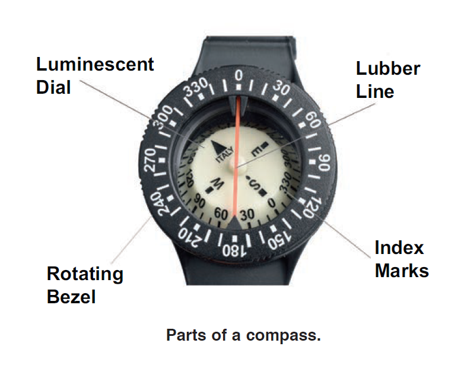

Foundational Scuba Diving Knowledge
To navigate means to control a course of travel through the use of calculations regarding position and direction. To a diver, it means controlling a course while diving so you know where you are at all times in relation to a given point, such as an exit area.
Navigation has many applications for divers. The skill can be used to locate or to relocate a dive site, to conduct a dive pattern, to search for lost objects, and to conduct environmental surveys. All divers have the need for a variety of navigational skills simply because even the best underwater visibility is insufficient to permit navigation by vision alone.

- Luminescent Dial: The rotating needle or card that always points north. It's coated with glow-in-the-dark material so it remains visible in low-light or murky conditions.
- Lubber Line: A fixed line inside the compass housing that represents the direction the diver is facing. Used to align with a bearing during navigation.
- Rotating Bezel: A moveable ring with degree markings. Divers align it with the north indicator on the dial to maintain a specific heading or calculate return bearings.
- Index Marks: Markers (often double lines or arrows) on the bezel that are aligned with the lubber line. These help the diver keep track of the intended direction or heading over time.
Compass deviation is the error caused by local magnetic fields within the diver’s gear or equipment, such as a metal tank or dive light. It causes the compass needle to deflect from magnetic north. Deviation varies by orientation and should be minimized by keeping metal and electronics away from the compass.
Compass declination is the difference between magnetic north and true north. It varies by geographic location due to the Earth's magnetic field not aligning with its geographic poles. Local charts provide declination values to adjust compass bearings for accurate navigation.
A range is a line of position determined by aligning two landmarks. A fix is a precise position established by the intersection of two or more such ranges or bearings. Together, they help divers locate their exact position underwater.
Pilotage involves navigating by visual references, such as reef structures, sand channels, or distinctive rocks. Divers use these natural markers as visual cues to determine their location and direction.
Dead reckoning is the process of estimating a position based on direction, speed, and elapsed time without using external references. Divers use this when visibility is poor or landmarks are not available.
1. Choose a starting heading (e.g., 0°).
2. Swim a fixed distance or time while maintaining that heading.
3. Turn 90° to a new heading (e.g., 90°) and swim the same distance.
4. Repeat two more times, each time turning 90°, to complete the square.
5. Monitor kick cycles and time closely to maintain consistent legs.
A reciprocal course is 180° opposite your current heading. For example, the reciprocal of 78° is 258°. This course helps you return along the same path you came from.
Leeway is the sideways drift caused by currents or surge. To compensate, divers can adjust their heading slightly into the current or use visual markers to realign after each search leg.
If a diver encounters an obstacle, they should maintain compass awareness, note their current heading, swim around the object, and then return to the same bearing and distance to continue the pattern uninterrupted.
The three essential navigation tools are: a compass, a dive watch or timer, and a depth gauge (or dive computer). Together, they help monitor heading, duration, and depth for safe and effective navigation.
1. Maintaining a heading during navigation.
2. Determining return bearings to a known location, such as the entry point or anchor line.
A dive watch helps track elapsed time, which is essential for estimating distance traveled during kick cycles. When combined with a known heading and speed, it supports dead reckoning.
A kick cycle is a unit of distance based on a diver’s consistent number of kicks. For example, 20 kicks may equal 10 meters. Divers use this for estimating distance during navigation.
1. Bottom topography (sand ripples, ridges)
2. Light patterns or shadows
3. Water surge direction
4. Fish schools or coral types
5. Temperature gradients or thermoclines
Declination is the geographic offset between magnetic and true north and varies by location. Deviation is a compass error caused by nearby magnetic sources. Declination is external, deviation is local.
The reciprocal course of 78° is 258°. (78 + 180 = 258)
Current speed = (75 ft / 30 sec) = 2.5 ft/sec.
Convert to knots: 2.5 ft/sec × 0.592484 = ~1.48 knots.
To swim a straight course in the presence of a cross current, a diver must adjust their heading slightly into the current. This is known as crabbing into the current. The problem is a classic vector triangle: one vector is the diver’s swimming speed, another is the current speed, and the resultant is the desired heading (135° in this case).
Example:
Water motion, especially current, tends to push you off course unless you’re swimming directly into or away from it. In many instances, you’ll need to adjust for it as you navigate. If it’s weak, sometimes you can overcome its effects just by swimming slightly into it as you travel, but for stronger currents, you’ll have to adjust for it. One approach is to determine a compensated start point, and then swim the original heading.
Here is an approach:
- Determine the estimated time to your destination by dividing your swimming speed into the distance to your destination.
- Face your intended travel direction, establish neutral buoyancy and then hover. Let the current carry you downstream for five seconds. If the start point has obstructions in the area that you would hit doing this, or that block the current, move to a clear area to do this.
- After five seconds, turn into the current and swim back to where you started drifting, counting kick cycles.
- Multiply the number of kick cycles times the swim time. To find your compensated start point, drop the last digit and multiply by two. Swim directly up current that number of kick cycles from your original start point.
- Turn to your desired heading and begin your swim. Don’t stop, and don’t fight the current or your navigation will be off. Again, the exact current angle doesn’t matter.
Example
Metric
Suppose you swim 1.5 metres per second and you are 90 metres from your destination.
It will therefore take you 60 seconds to swim there (90 metres ÷ 1.5 metres/second = 60 seconds.)
Imperial
Suppose you swim 5 feet per second and you are 300 feet from your destination.
It will therefore take you 60 seconds to swim there (300 feet ÷ 5 feet/second = 60 seconds).
After drifting with the current five seconds, it takes you four kick cycles to return to the start point.
Calculate:
4 kick cycles x 60 seconds = 240.
Drop the “0” → 24. 24 x 2 = 48.
Swim directly up current 48 kick cycles to start your run.
To calibrate distance using kick cycles, a diver measures how far they travel over a known distance—such as a 100-foot rope or pool lane—while counting each full kick cycle. Divide the known distance by the number of kicks to determine average distance per cycle. This allows accurate distance estimates during underwater navigation by counting kicks.
Example: Suppose a diver swims 100 feet in 25 kick cycles. That means each cycle covers 4
feet. To swim 180 feet, the diver would need:
180 ÷ 4 = 45 kick cycles.
To calibrate distance with a timer, the diver swims a known distance at a relaxed, consistent pace while timing the swim. By dividing distance by time, the diver calculates average swim speed (e.g., feet per second). This speed can then be used to estimate distances during a dive by tracking elapsed time underwater while maintaining a consistent pace.
Example: Suppose a diver swims 100 feet in 60 seconds. That equals 100 ÷ 60 = 1.67 feet
per second. To swim 180 feet, the diver would need:
180 ÷ 1.67 ≈ 108 seconds, or about 1 minute and 48 seconds.